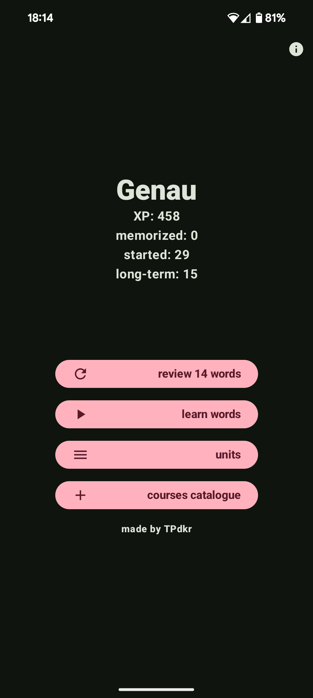
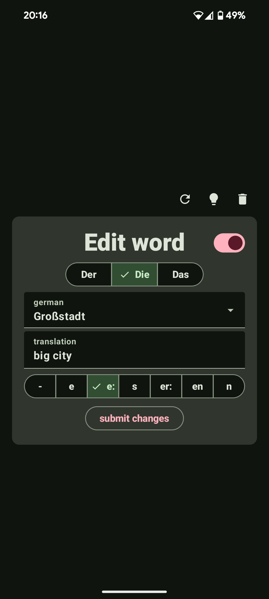
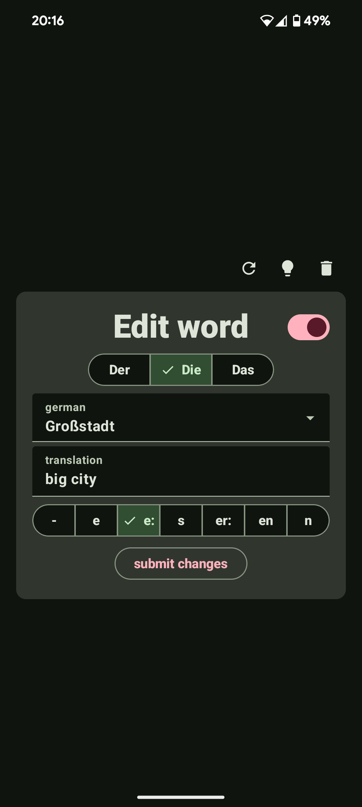
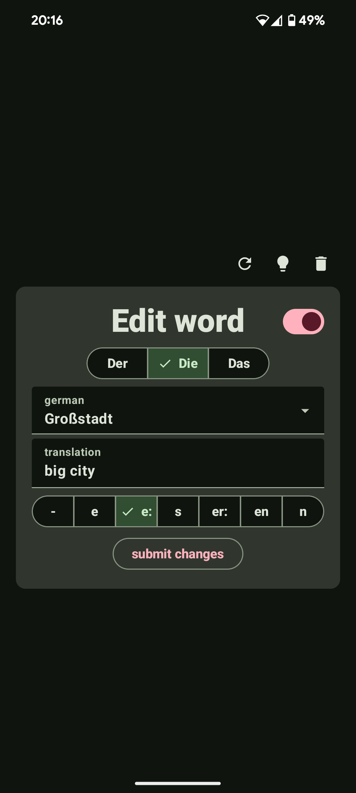
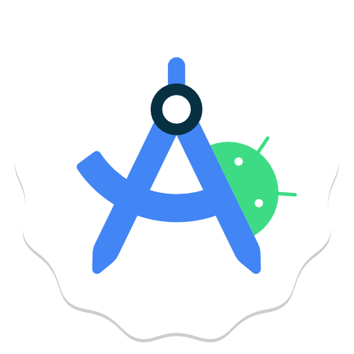
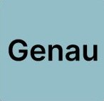

Genau
A language laerning app for Anrdoid


 



Description:
Learn German vocabulary in an easy and organized way! Get motivated by each lesson and enjoy a nice array of features customized to learning German.
The user can input words and organize them into courses and word sets. The choice for article and plural form is made easy with special buttons.
Development:
This app helped me understand the process of developing a service and its architecture. I used Technologies such as SQL, Kotlin, AnrdoidStudio and jetpack compose library.


Github
Features:
- Easily add german nouns with article and plural form
- Manage courses and word sets
- Auto translate german words
- Efficiently review vocabulary
- Get motivational messages at the end of a lesson